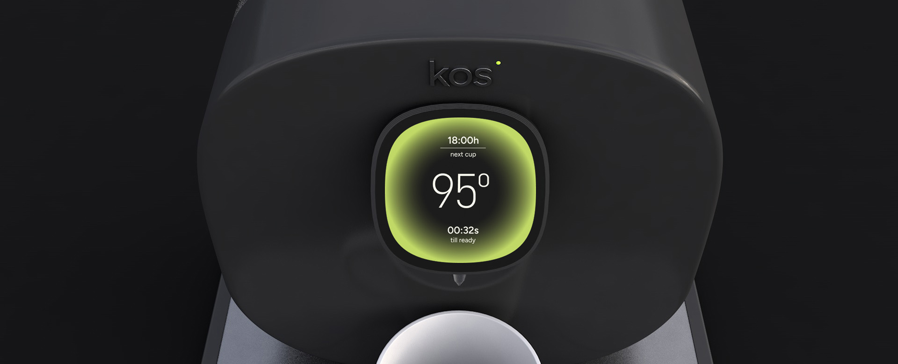
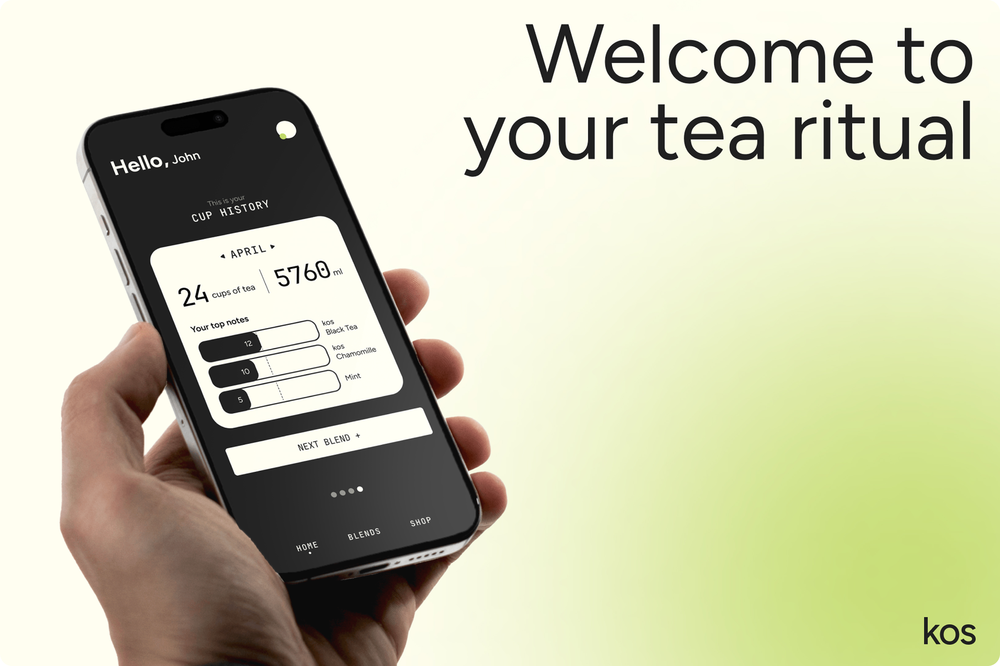
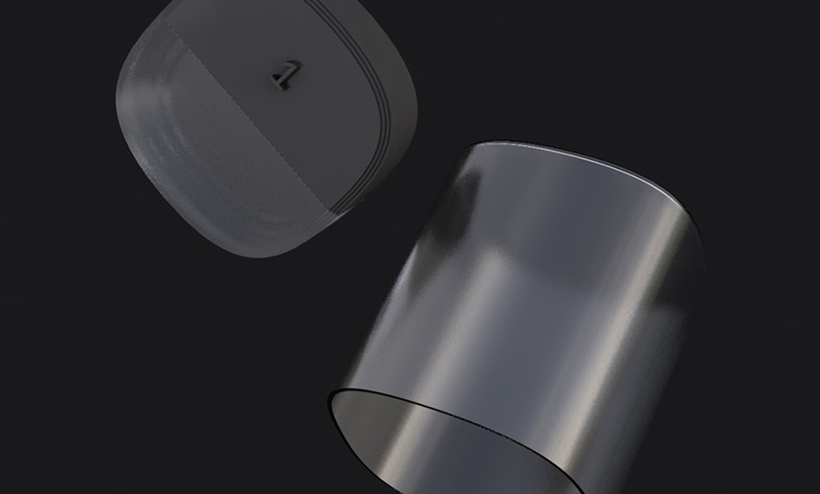
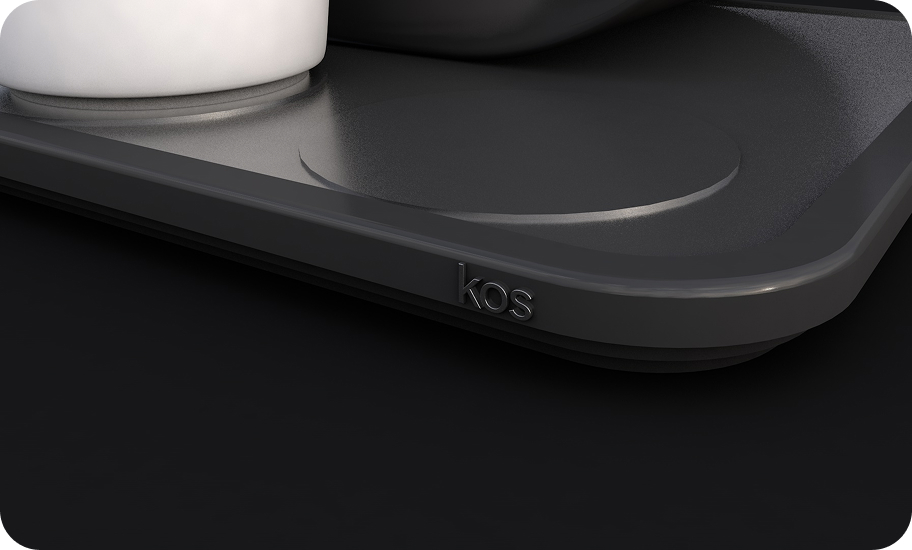
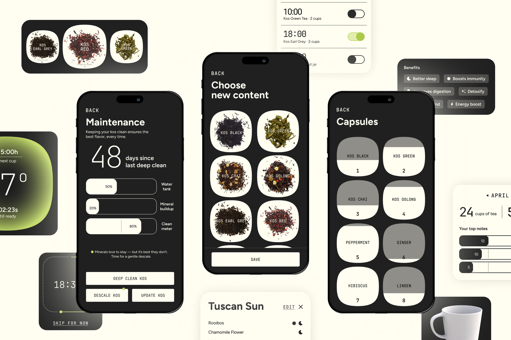
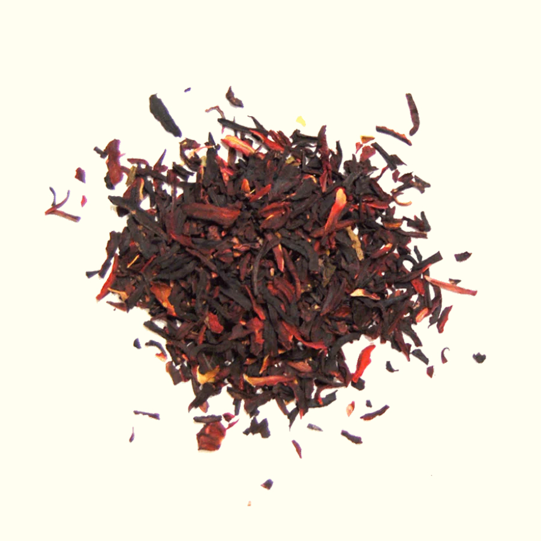
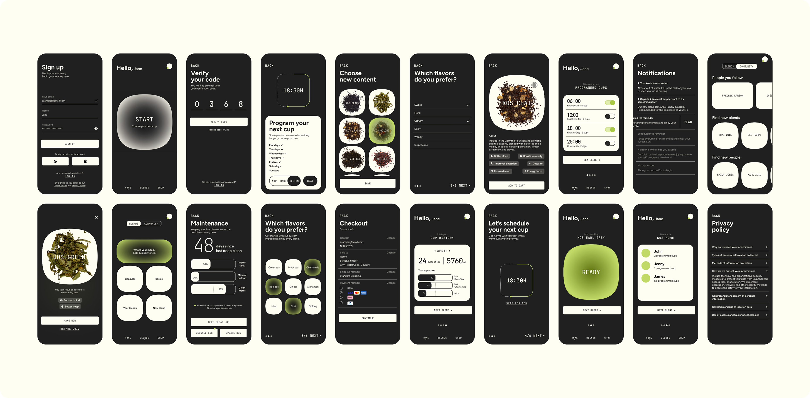

The brief consisted on creating the identity and app of an IOT product.
In this case, we chose to create a tea maker that would reimagine the wellness industry with customization and guided knowledge of every ingredient.
In our busy routine, we must make our daily pause. For many, this comes in the form of a tea ritual.
kos is a tea brand built around an automated tea maker that turns brewing into a personal ritual. Users can schedule their brews in advance, customize ingredients and blends to their taste, and share their recipes with a community of fellow tea drinkers, making each cup both effortless and their own.
Inspired by the idea of the comfort zone, the visual identity brings warmth, calm, and coziness to every element. The dark color palette is designed for the moments the product is used most, early mornings and late nights, matching the daily rhythm of its audience.

The tea maker is composed of three main design components.
At the front, a screen synchronized with the mobile app allows users to interact directly with the device. This feature was included based on User Research, which revealed that the target audience prefers not to rely solely on the app for functionality.
At the back, the device houses the water container and eight tea note capsules. These can be filled with Kos official blends or customized ingredients, offering flexibility and personalization.
Finally, at the bottom, a sliding tray holds up to three cups or thermoses, enabling users to program multiple brews for different family members throughout the day.




The whole app and interactions were created. The main graphic elements consists of round rectangles and gradients to represent the warmth of the comfort zone, as well as a combination of typographies that combine the minimalist with the tech side of the product.

Credits
Tutors:
Josep Ortega.
Client:
IDEP Barcelona
La Crisis
de los 20's


HYPHA